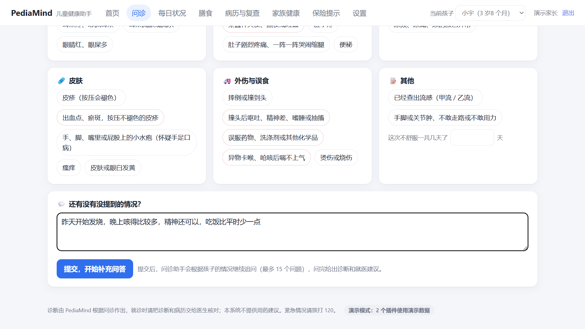
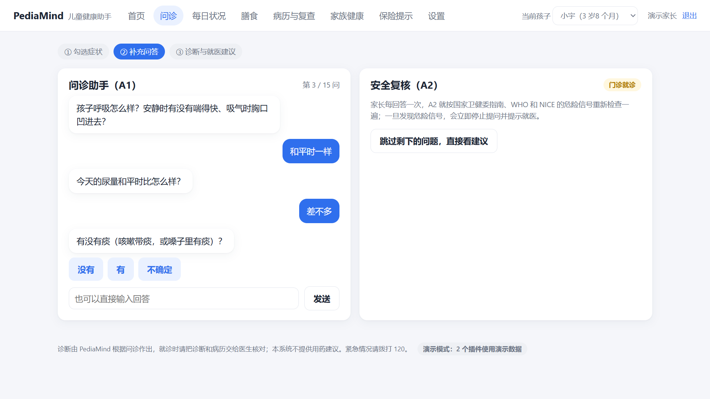
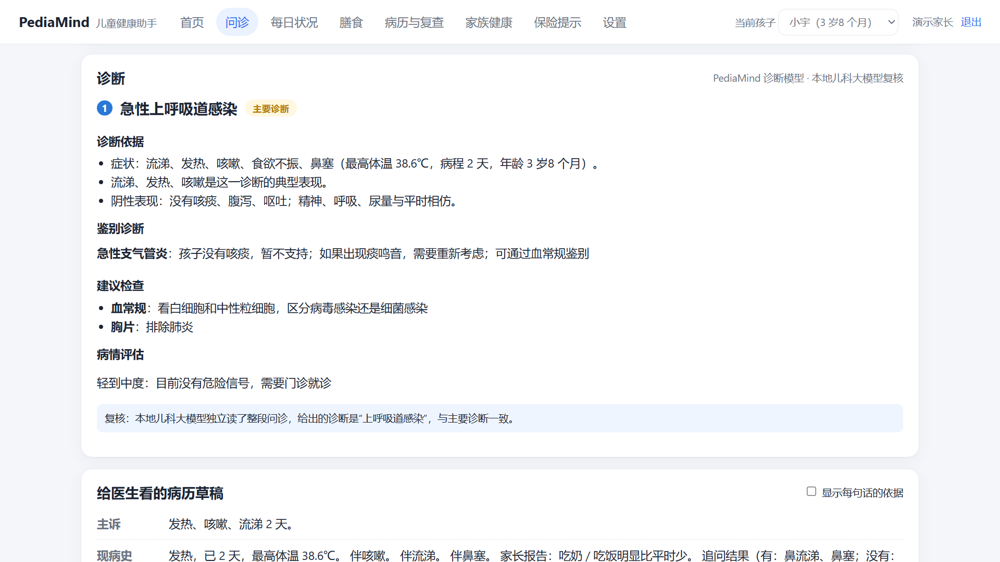
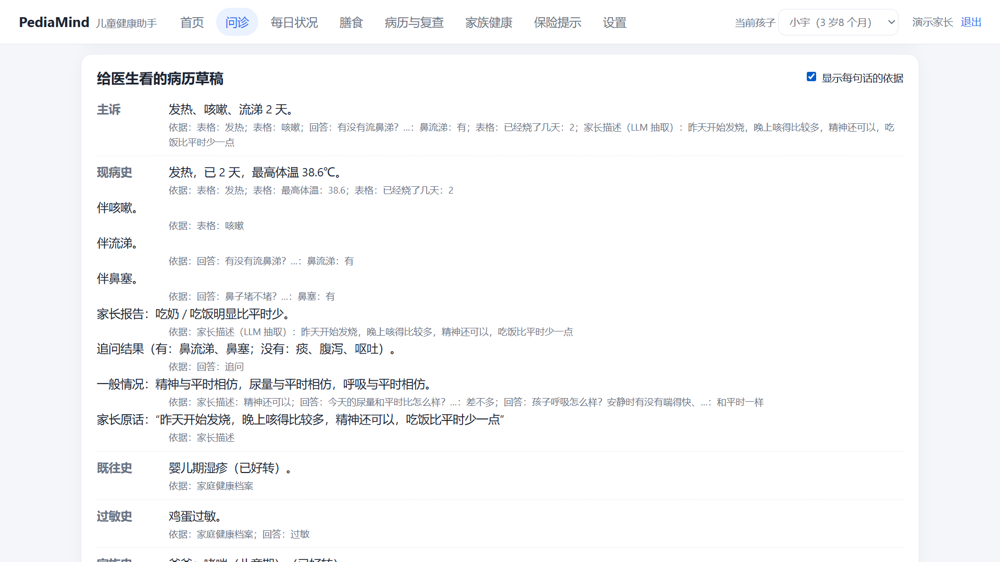
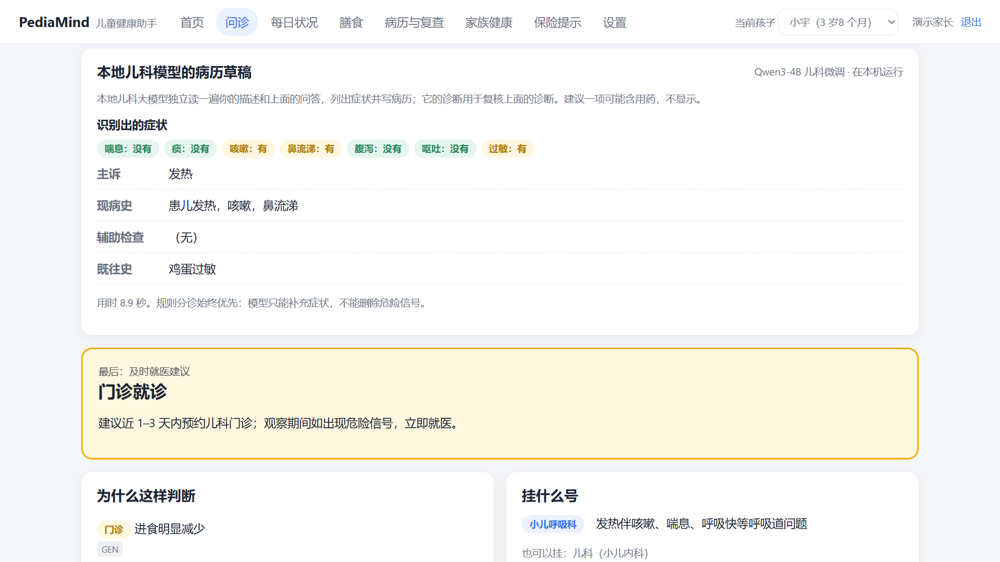
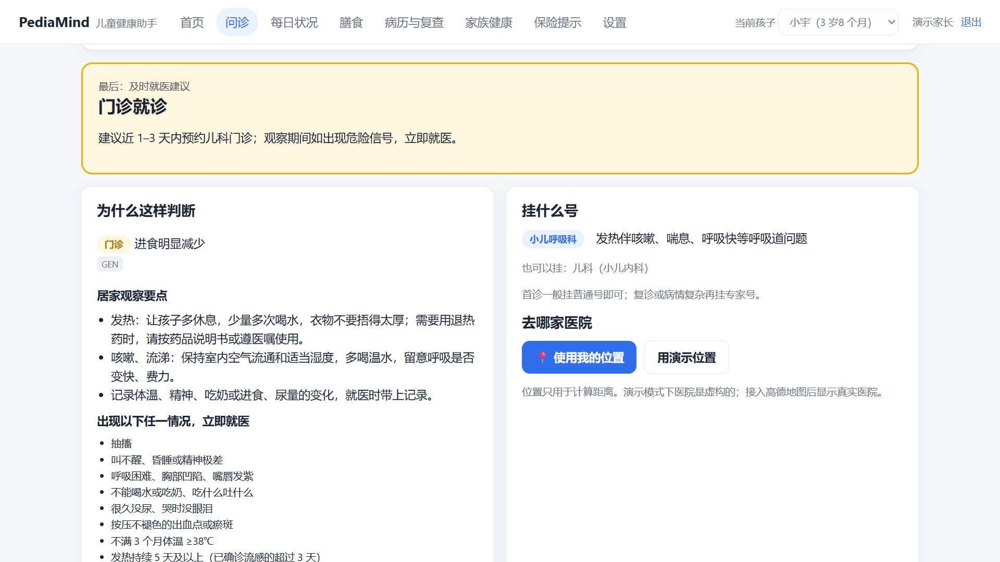

所有数字都在 IMCS-21 测试集上计算，测试集从没参与训练、统计或调参（调参只用验证集）。"问出的症状"指真实医生靠追问才知道的症状被问到的比例。
01要解决的问题
老师对项目提了两点意见：一是要说清楚医疗数据是怎么用的；二是医疗数据必须产生实际效果，而不是只调用大模型 API。课程的目标是提高问诊能力。
问诊能力指什么
家长开头说得很少，好的医生靠追问把情况问清楚。公开数据集 IMCS-21（4,116 段真实儿科在线问诊，10 种常见病）标注了每段问诊里家长主动说的症状和整段谈到的症状：
- 家长开头主动说的症状，中位数只有 1 个；
- 去掉已说过的、疾病名和检查结果后，要靠追问才知道的症状中位数 3 个，其中孩子确实有的 1 个；
- 测试集 811 段里，706 段至少有一个这样的症状。
怎么量化：模拟家长
每段测试问诊对应一位"模拟家长"。提问方一开始只知道家长原话，每轮问一个症状，模拟家长按真实问诊的标注回答"有 / 没有 / 不确定"。
- 召回：问了 k 个问题后，问到了几成要靠追问才知道的症状；
- 确有症状召回：只算孩子确实有的；
- 置信区间用 1,000 次 bootstrap；比较两种做法时逐段配对。
02方法：数据怎么变成问诊能力
离线用 IMCS-21 训练集做三样东西，在线接进 A1 问诊、A2 复核两个智能体；测试集只用来评测。
1相似问诊知识库
把 2,472 段训练问诊各记成一张"症状 → 有 / 没有 / 不确定"表。和孩子已知情况越一致的问诊权重越高（孩子有的症状它也有 ×6，没有 ×0.05），再按加权后"相似问诊里谈到的比例"给还不知道的症状排序。
每个候选都带依据，例如"与孩子情况相似的真实儿科问诊里，40% 谈到了这一点"。参数只在验证集上调过（128 组，前 8 组相差 0.2 分）。
2Harness：把模型关在有依据的候选里
- 先听懂：规则 + 本地病历模型读家长原话，说过的不问；
- 知识库给 5 个候选；在相似问诊里出现 ≥10% 的危险信号排最前，不交给模型；
- 问诊模型只能在候选里选，选不到就用第 1 名，不可能问出候选以外的东西（如药名）；
- 措辞优先用审核过的家长问法，并过 A2 的禁用词检查；
- 候选都低于 20% 就提前结束，最多追问 5 个。
3模拟家长评测
用测试集的真实问诊当模拟家长，比较 12 种提问方式；所有中间结果（每段问诊每一轮问了什么）都保存下来，可以逐段复查。
注意：IMCS-21 原始的"隐含症状"也包含家长已说过的症状和医生说出的疾病名，不去掉会把需要追问的症状夸大成 6 个、召回虚高。
4问诊模型
只取医生"询问症状"、而且问到新症状的 2,488 句话训练 Qwen3-4B（QLoRA，秩 16，2 轮，19 分钟）。推荐用药的 6,685 句一句都不用，所以它只学会问、不学开药。
猜"医生下一句问什么"：第 1 个就猜中 40.5%（知识库 33.7%），前 5 个里有 72.3%（知识库 68.2%），840 句测试集医生提问。
03模拟家长回放：同一段问诊，改进前后各问 5 个
下面是测试集里的真实问诊。左边是改进前的 A1 清单，右边是现在网站的做法（知识库 + 问诊模型，每答一题重算）。点"播放"逐题看。
04结果：问诊能力
核心问题：同一个提问方，有没有 IMCS-21 的数据，问诊效果差多少？
同一个提问方，不用和用了 IMCS-21
问 5 个问题后，问出"要靠追问才知道的症状"的比例（%）；括号里是提升。鼠标移到线上看置信区间。
- 数据产生了实际效果，而且不是靠换更强的 API：同一个 Kimi 多问出 27 分；没训练过的 4B 小模型自由提问时 2,000 个问题里有 1,671 个无效（大多在重复问已知的症状），加上知识库或用医生提问微调后都接近 60%。
- 大模型自己决定问什么并不可靠：Kimi 在知识库候选里自由挑选（56% 的轮次选了第 1 名），结果 66.4，和知识库第 1 名单独用的 66.8 相当，与 MediQ 论文的发现一致。所以网站只让模型在有依据的候选里选。
问得越多，问出得越多：召回随追问个数的变化（200 段）
鼠标移到图上查看每个位置的数值。网站做法在问 5 个时为 59.2%，问 10 个时为 75.7%。
全部 811 段测试问诊：统计类提问方式
"每答一题重算"比"开头算一次"高 3 分，说明随回答调整本身有用；危险信号优先的版本召回相同（55.1），不损失效果。验证集上结果一致（改进前 46.3，每答一题重算 54.1）。
配对比较（200 段，问 5 个）
| 比较 | 差值（95% CI） |
|---|---|
| 问诊模型 − 原版自由提问（训练的效果） | +44.9（+39.7 至 +50.6） |
| 原版 + 知识库 − 原版自由提问（知识库的效果） | +41.7（+36.8 至 +46.8） |
| 网站做法 − 改进前的 A1 清单 | +11.5（+7.1 至 +16.0） |
| 知识库单独 − 改进前的 A1 清单 | +9.0（+4.8 至 +13.7） |
| 问诊模型 − 知识库单独 | +2.8（−1.9 至 +7.5），不显著 |
什么时候停止追问（811 段，最多 10 个）
平均问的个数相同时，"提前停止"和"固定问 k 个"召回差不多；它的作用是按孩子情况调整，没什么可问的就少问。
05诊断：问完先给诊断，最后才说就医
老师的初衷是做能替代医生问诊的"问诊模型"，而不只是辅助工具。追问结束后，结果页依次给出：问诊小结 → 诊断（按医生的写法）→ 给医生看的病历草稿（末尾写上诊断）→ 最后是及时就医建议。
诊断按医生的写法给出
- 主要诊断，必须有孩子身上的典型表现支持（发热、咳嗽、流涕、鼻塞写"急性上呼吸道感染"，而不只是"发热待查"）；另一个系统的问题（如发热的孩子同时便秘）列为其他诊断；
- 诊断依据：症状、病程和体温，哪些是典型表现，哪些阴性表现；
- 鉴别诊断：每个写明为什么暂不考虑、出现什么要重新考虑、靠什么检查鉴别；
- 建议检查：从训练集医生病历统计（例如新生儿黄疸 69% 提到测胆红素），并写明查它是为了什么；
- 病情评估，以及本地儿科大模型独立读整段问诊后的复核。
诊断模型
多分类逻辑回归，输入是已知的症状状态和家长原话里的字词，只用训练集 2,472 段问诊训练（按"信息不全"的程度做成 14,832 条），正则强度在验证集上选。1 MB，网站在 CPU 上直接计算。主要诊断 / 其他诊断 / 鉴别诊断的写法规则也在验证集上选定。
网站页面上不显示数据集名称和概率；出现危险信号时不给诊断，直接让家长立即就医；情况超出 10 种常见病时明确说需要医生当面诊断；不给用药建议。
诊断模型的准确率（10 类，测试集 811 段，从未参与训练）
"前 3 个里有"指医生的诊断在模型排出的前 3 种里。总是猜最常见的病只有 13.4%。
网站上的诊断写法：主要诊断 + 其他诊断 + 鉴别诊断
"一致"按临床名称计算（上呼吸道感染和感冒算同一个）。高亮行：知识库每答一题重算、问 5 个后（与网站相同的追问方式，811 段）。
- 数据让诊断从"瞎猜"变成有据可查：主要诊断与医生一致约 59%，医生的诊断在列出的 2–3 个诊断里约 89%；总是猜最常见的病只有 13.4%。
- 主要诊断的上限在 61% 左右：10 种诊断本身有重叠（"小儿发热""小儿咳嗽""上呼吸道感染"常难分开），连两位医生写的诊断与数据集标签也只有 83.5% 一致。所以网站在主要诊断之外写出鉴别诊断和需要做的检查，就诊的医生可以直接核对。
- 本地病历模型在网站设定下（只读家长原话和 5 个追问）第 1 个就对 42.0%，同样 200 段上诊断模型是 48.5%，所以用它做复核：它的诊断与主要诊断不同时，补为鉴别诊断。给它完整的医生对话时是 63.4%，但对话里往往有医生自己说的诊断，不能代表预问诊能力。
06第一阶段：本地病历模型
问诊结束后，本地模型读完整的问答，识别症状并写一份病历草稿。用 IMCS-21 官方的症状识别（SR）和病历生成（MRG）指标，在同一批 200 段测试对话上比较。
病历模型：症状识别与病历生成
分数越高越好。参照：两位医生互相比较，病历得分只有 53.0；官方基线为症状识别 67.49、病历 54.26。
在全部 811 段上，微调模型的症状识别 F1 为 69.8（95% CI 68.4–71.4），病历得分 57.6（56.9–58.3）。它在本机运行、数据不出本机；批量评测时每段约 3 秒，Kimi 为 26.5 秒。它的"诊断"一项作为第二参考显示在初步诊断里；"建议"一项可能含用药，不显示。
07先听懂再问：少问家长已经说过的
上面的评测假设 A1 完全读懂了家长开头的话。网站里靠抽取，所以在全部 811 段上单独测了这一步（每段问 5 个）。
重复问家长已经说过的症状（次，811 段）
规则和本地病历模型一起读，抽全的比例从 59.1% 升到 78.1%，重复提问减少一半；代价是召回低 1.4 分（在置信区间内）。
08网站截图
运行中的网站（演示账号，虚构的家庭）。点击图片放大。






09安全设计
- 规则优先分诊：依据国家卫健委儿科分诊标准、WHO IMCI、NICE；模型只能补充症状，不能降低紧急程度；
- A2 一票否决：每答一题重新分诊，发现危险信号立即停止追问、提示就医；
- 危险信号优先：数据追问里，危险信号候选一定先问，不交给模型挑。
- 诊断不越过分诊、不给用药：诊断不会降低分诊级别，危险信号时不给诊断、只提示立即就医；病历草稿和模型输出都过禁用词检查，用药句子会被删除；
- 数据不出本机：两个本地模型在笔记本显卡上运行，只监听本机地址；
- 显存保护：所有 GPU 任务限制显存，评测另有看门狗。
10局限
- 模拟家长不等于真实家长：真实问诊里没谈到的症状一律按"没有"回答，衡量的是"能不能问到医生认为值得谈的症状"，不是诊断准确率。
- IMCS-21 只覆盖 10 种常见病、来自在线问诊；罕见病和急症问不到也测不到，所以危险信号仍由固定题库和规则先筛查。
- Kimi 只跑了 50 段（控制费用，花费约 8 元），置信区间较宽；问诊模型比知识库单独高 2.8 分，但不显著。
- 网站上要靠抽取读懂家长原话，实际效果介于"完全读懂"和"规则抽取"之间（召回约 49–55）。
- 病历模型有时会套模板句（如没问过也写"无恶心呕吐"），辅助检查、既往史两项不如 Kimi。
- 诊断只覆盖 10 种常见病：主要诊断与医生一致约 59%，医生的诊断在列出的诊断里约 89%，还达不到替代医生的水平；诊断标签本身也有重叠和噪声。
11数据、工具与参考文献
- Chen W. et al. A benchmark for automatic medical consultation system: frameworks, tasks and datasets. Bioinformatics 39(1), btac817, 2022.（IMCS-21 数据集与官方评测）
- Li S. S. et al. MediQ: Question-Asking LLMs and a Benchmark for Reliable Interactive Clinical Reasoning. arXiv:2406.00922, 2024.
- Schmidgall S. et al. AgentClinic: a multimodal agent benchmark to evaluate AI in simulated clinical environments. arXiv:2405.07960, 2024.
- Xiong G. et al. Benchmarking Retrieval-Augmented Generation for Medicine. Findings of ACL, 2024.（MedRAG / MIRAGE）
- Qwen Team. Qwen3-4B-Instruct-2507；LLaMA-Factory（QLoRA 训练）；Dettmers T. et al. QLoRA, NeurIPS 2023.
- 国家卫生健康委员会儿科相关诊疗规范与分诊标准；WHO 儿童疾病综合管理（IMCI）；NICE 儿童发热指南（分诊规则依据）。